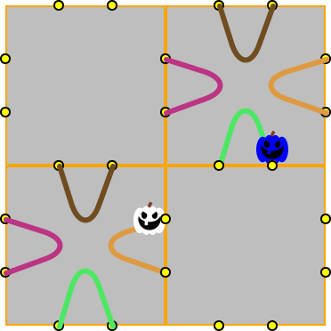

Software Development

I expect students to visit this page once per 24 hours starting with the first day of the semester.
 Friday, November 15th, 2019 4:29:30pm
Friday, November 15th, 2019 4:29:30pm
It turns out that there was a miscommunication between me and the TAs for last week’s rubric. If the given README file specified the path of a file, there was no need for your WELCOME to repeat this path. Aditi and Dustin will fix the grades some time this weekend.
Thursday, November 14th, 2019 10:04:54pm
Two days ago Disney launched its streaming service. Here is how this stress test went.
Friday, November 8th, 2019 8:42:26am
Next week you will need to meet with the TA who is going to grade your homework 8 during his/her office hours (see Office Hours, Etc.). We will push a timely notification into your git repo.
Show up before the appointment time.
Open the game observer module in your IDE.
Start one of the games from the testing task in 7 —
The Administrator. Demo the running game observer.
Be prepared to respond to the TA’s questions and react to suggestions.
Saturday, November 2nd, 2019 8:58:03pm
The make-up code review will take place on Monday at 10:30am in West Village H, room 366. See Lectures.
Friday, November 1st, 2019 2:21:29pm
in Racket | in Python | |||||||||||||||||||||||||||||||
|
|
Thursday, October 31st, 2019 9:32:32am
Tomorrow you will receive email notifying of who your new partner is and where your new git repo is located. Please, immediately get in touch with your partner and set up a joint work schedule.

A number of students complained to me and/or the TAs about the past rubric. Here are some basic notes on why we checked certain points and what went wrong:
The protocol specified in Tsuro, A Local Protocol must be implemented because it is what your software architect decided on, for better or worse. So your player object’s interface must have four methods for interacting with the referee and one for interacting with the administrator. Since the two components—
referee and administrator— belong on the same side of the project (both phases), you may just create a single interface. The words “observe” and “observer”, like many in computer science, are overloaded.
An object’s observer method retrieves properties of the objects without modifying it. The signature and purpose statement tend to signature clarify this status quickly. An example of an observer method is (likely to be) one that inspects the Tsuro game board and reports whether two avatars collided on a port.
By contrast, the observer pattern is a setup for interacting (instances of) classes. The absolutely minimal documentation for its use includes the two words plus an explanation of which objects are the subject of the observation, which ones do the observation, and what the information is observed. Since I consider even this too much for students of Software Development, I asked the TAs to merely look for the words “observer” and “pattern” as discussed in class.
I also asked the TAs to pay close attention to whether the notification action (sending information from the observed to the observer) had been turned into a method/function and whether it was used to observe all possible public events (or the purpose statements explicitly ruled out notification).
Fundamentals I and II pushed really hard that repetitions of code are to be avoided and turned into functions and methods. The description of the observer pattern says so, too. Why? As some of you have noticed, I am asking you to take care of players that take too long to complete their computations and I will be doing so too for notification actions. (You do not want to bring down the entire site because one component is in an infinite loop or runs on an overloaded CPU.) Adding this protection is a one-point change if you have a separate method and error-prone if you have repeated the code in several places. In the real world of software development, this is called the DRY principle in case you don’t accept this from me.
In general, I don’t mind if you ask the TAs or me such questions. I do mind if you’re overly aggressive with my TAs and I am especially unhappy if it turns out that you have not done your “homework” and read up on the basics.
Monday, October 21st, 2019 6:23:51pm
In response to a request, I clarified Ending a Game in Tsuro.
Monday, October 14th, 2019 5:33:19pm
For some reasons, the Saturday revision of 5 —
Friday, October 11th, 2019 5:29:23pm
Here are some essential announcements for the week starting Monday, Oct. 14:
Matthias’s office hours are canceled
Aditi has to move her office hours from Wednesday to Thursday due to jury duty
Each pair must bring a laptop to Friday’s class to run the "observer experiment". Michael will evaluate every pair.
Monday, October 7th, 2019 12:19:26pm
I have added some clarifications to 4 —
Tuesday, October 1st, 2019 9:06:05pm
General now comes with images so that you recognize the teaching assistants when you go to their office hours.
Saturday, September 28th, 2019 6:53:18pm
I hadn’t finished editing the tile-generating code on Friday for lecture, so I thought I’d post my Racket version of the code here. Please take a look to see where I add comments and where I rely on the name of the function, method, or module to convey an interpretation. Additionally, you may wish to study the algorithm itself, especially in case you struggled. Irrespective of the representation of tiles and edges plus the syntax of the solution, the essence should be similar.
#lang racket (module+ test (require rackunit)) (define TILES# 35) (module+ test (check-equal? (length all-tile-types) TILES# "check number of tiles"))
(module edge-representation racket (provide ; type Edge edge edge-from edge-to) ; type Edge = [List Port Port] (define edge list) (define edge-from first) (define edge-to second)) (require (submod "." edge-representation))
(module tile-representation racket (provide ; type Tile ; [List Edge Edge Edge Edge] -> Tile create-tile ; {Tile Tile -> Boolean} rotate-=?) (require SwDev/Lib/or) (require (submod ".." edge-representation)) (require Tsuro/Code/Common/port) (struct tile [lo4edges] #:transparent) (define (create-tile edges) (tile (sort edges <-port #:key edge-from))) (define (rotate-=? c1 c2-0) (or~ (equal? c1 c2-0) #:let c2-1 (rotate-tile c2-0) (equal? c1 c2-1) #:let c2-2 (rotate-tile c2-1) (equal? c1 c2-2) #:let c2-3 (rotate-tile c2-2) (equal? c1 c2-3))) ; {Tile [#:degree Degrees] -> Tile} (define (rotate-tile c0 #:degree (d 90)) (cond [(zero? d) c0] [else (define rotated-edges (for/list ((e (tile-lo4edges c0))) (define 90from (90degrees (edge-from e))) (define 90to (90degrees (edge-to e))) (if (<-port 90from 90to) (edge 90from 90to) (edge 90to 90from)))) (rotate-tile (create-tile rotated-edges) #:degree (- d 90))]))) (require (submod "." tile-representation))
(require Tsuro/Code/Common/port) ; generate all 35 unique tlle configurations ; {[Listof Port] -> [Listof [Listof Edge]]} ; for the given 2 * N ports, create list of all possible N edges ; GENERATIVE by removing 2 ports, we get closer to the empty case [define (all-edges-for 2*n-ports) (cond [(empty? 2*n-ports) '(())] [else (define from (first 2*n-ports)) (define others (rest 2*n-ports)) (for/fold ([result '()]) ((to others)) ; <– loop collects gen.-rec. results (define the-edge (edge from to)) (define n-ports (remove to others)) (define other-edges (all-edges-for n-ports)) ; <– generative recursion (define with-edge (map (λ (1other) (cons the-edge 1other)) other-edges)) (append with-edge result))])] ; [Listof Tiles] (define all-tile-types ; loop eliminates rotated tiles (for/fold ((set '())) ((lc (all-edges-for PORTS))) (define next (create-tile lc)) (if (memf (curry rotate-=? next) set) set (cons next set))))
Monday, September 16th, 2019 9:40:23am
On Tuesday we will do some in-class software development. Please coordinate with your partner so that every pair has at least one laptop in class. Thanks.
Saturday, September 14th, 2019 12:20:32pm
I have modified C —
Friday, September 13th, 2019 6:00:42pm
Industrial people are slowly recognizing the downside of ticket-driven software development. Considering reading the Jon Evans’s blog post to get a sense of what these people are getting at.
Friday, September 13th, 2019 12:33:36pm
[login-faculty] $ cat test-input.json | nc login-faculty.ccs.neu.edu 45678 |

In the right shell window I start ./C –up, waiting to connect with a
single client. Then in the left window I first display the content of the
test file to the shell, before I use the command combination from above to
send it to the “server” in the right window. As soon as the server has
done its work for the client, it shuts down—
Thursday, September 5, 2019 10:44:25am
Please prepare a letter-size sheet of paper by folding it lengthwise, writing down the name of your favorite programming language on one side and placing it in front of you on your desk. ~~ You will get the chance to build a large code base in this language so that the instructor’s taste in PL won’t inhibit your amazing programming skills.

Even Congress Doesn’t Understand Why Software Engineers Take So Long